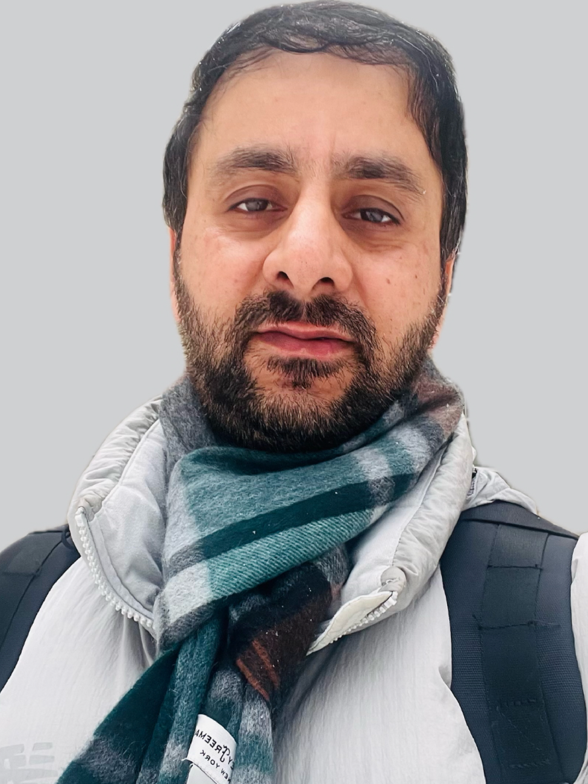
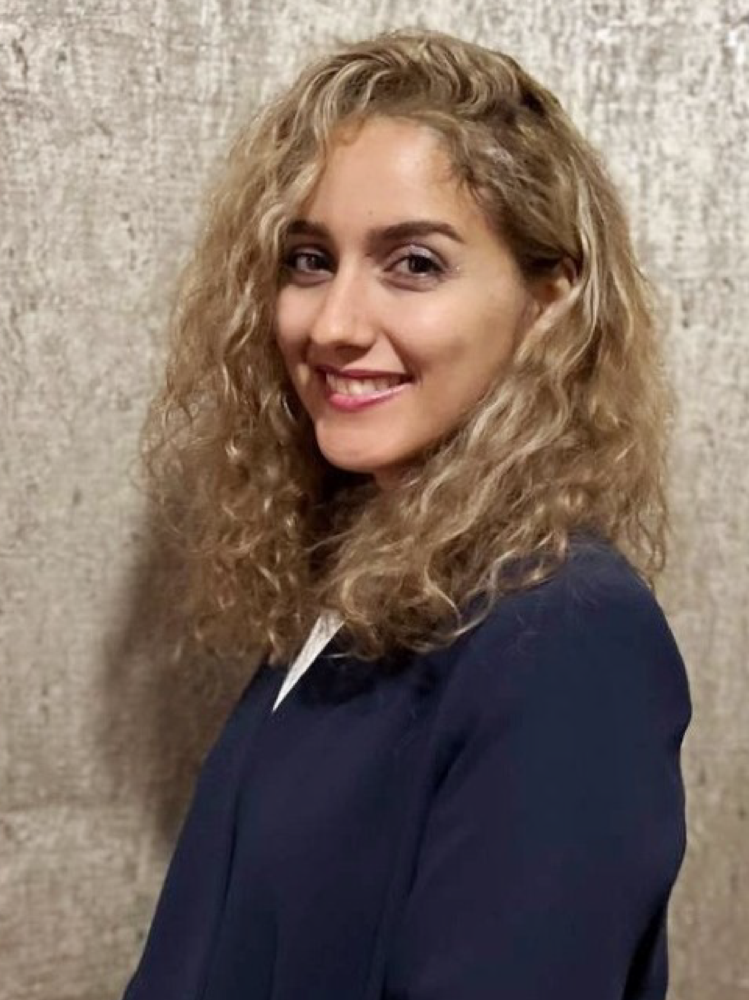

Current Members
Trainees & Research Fellows
The Falls Informatics Group actively trains the next generation of biomedical informaticists through research fellowships and mentored research experiences.

Bilal Rather
Postdoctoral Associate
Department of Biomedical Informatics · University at Buffalo

Lucille Tomin
PhD Student
Biomedical Informatics · University at Buffalo

Vida Bodaghi
PhD Student
Biomedical Informatics · University at Buffalo
Interested in Joining?
We welcome motivated graduate students, postdoctoral fellows, and undergraduates interested in computational drug discovery, clinical informatics, and biomedical data science. Positions may be available through the Department of Biomedical Informatics PhD program or existing fellowship mechanisms.
Contact Dr. Falls